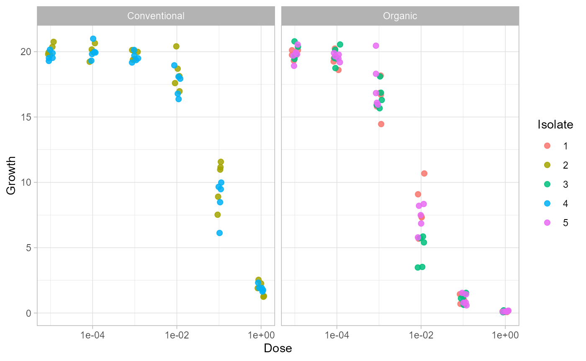
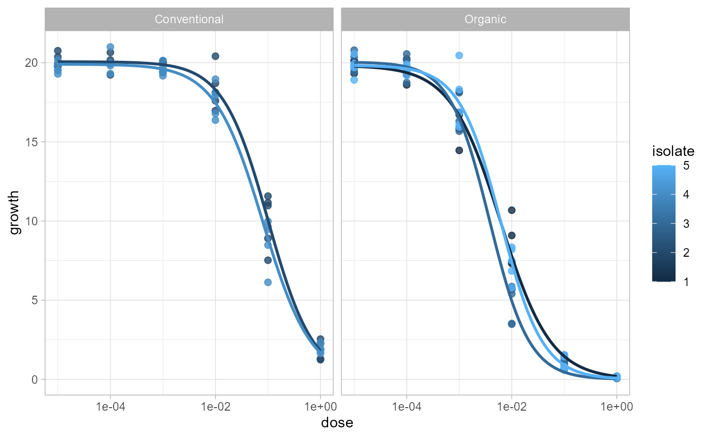
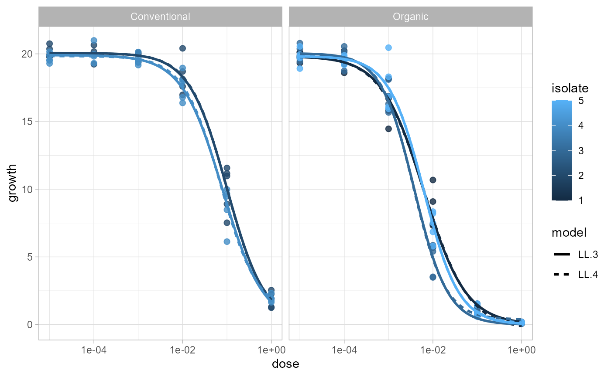

Compare EC50 models
Kaique S Alves
2026-05-24
Source:vignettes/ec50_multimodel.Rmd
ec50_multimodel.RmdIntroduction
Use ec50_multimodel() when you want to fit more than one
candidate drc model to the same isolates and strata. This
is useful during model selection, when you need EC estimates and
model-selection statistics in the same output.
Data
The examples use a small subset of multi_isolate so the
vignette runs quickly while still showing the grouped workflow.
data(multi_isolate)
example_data <- subset(
multi_isolate,
isolate %in% 1:5 & fungicida == "Fungicide A"
)
head(example_data)## isolate field fungicida dose growth
## 1 1 Organic Fungicide A 0e+00 20.2082399
## 2 1 Organic Fungicide A 1e-05 20.1168279
## 3 1 Organic Fungicide A 1e-04 19.2479678
## 4 1 Organic Fungicide A 1e-03 15.8123455
## 5 1 Organic Fungicide A 1e-02 7.3206757
## 6 1 Organic Fungicide A 1e-01 0.6985264Inspect the raw dose-response observations before comparing models. Because each isolate can have repeated observations at the same dose, this plot uses jittered points instead of connecting observations with lines.
ggplot(example_data, aes(dose, growth, color = factor(isolate))) +
geom_jitter(width = 0.08, height = 0, alpha = 0.85, size = 2) +
facet_wrap(~field) +
scale_x_log10() +
labs(x = "Dose", y = "Growth", color = "Isolate") +
theme_light()## Warning in scale_x_log10(): log-10 transformation introduced
## infinite values.
Compare Models
Pass a list of candidate model functions to fct. The
function fits each model for each isolate and stratum, then appends
model-selection statistics returned by drc::mselect().
df_models <- ec50_multimodel(
growth ~ dose,
data = example_data,
isolate_col = "isolate",
strata_col = "field",
fct = list(drc::LL.3(), drc::LL.4(), drc::W2.3()),
interval = "delta"
)
head(df_models)## ID field Estimate Std..Error Lower Upper logLik
## 1 1 Organic 0.006072082 0.0005740341 0.004902813 0.007241351 -45.15079
## 36 2 Conventional 0.101455765 0.0076364691 0.085900787 0.117010744 -43.53183
## 71 3 Organic 0.003776957 0.0002432571 0.003281459 0.004272456 -36.09845
## 106 4 Conventional 0.079971237 0.0055655891 0.068634503 0.091307971 -38.42154
## 141 5 Organic 0.006122508 0.0004575060 0.005190599 0.007054418 -41.41058
## 11 1 Organic 0.006364103 0.0007031475 0.004930024 0.007798182 -44.69257
## IC Lack.of.fit Res.var model
## 1 98.30158 0.7271292 0.8451681 LL.3
## 36 95.06365 0.9866424 0.7704874 LL.3
## 71 80.19689 0.3897432 0.5038400 LL.3
## 106 84.84309 0.8328859 0.5753664 LL.3
## 141 90.82115 0.9744433 0.6825317 LL.3
## 11 99.38515 0.7370811 0.8498845 LL.4The model column identifies the candidate model. The
IC column is the information criterion reported by
drc::mselect() for the fitted model.
Pick Candidate Models
You can rank candidate models within each isolate and stratum using
base R. Lower IC values indicate stronger relative support
among the compared models.
ranked_models <- df_models[order(df_models$field, df_models$ID, df_models$IC), ]
best_models <- ranked_models[!duplicated(ranked_models[c("field", "ID")]), ]
best_models[, c("ID", "field", "model", "Estimate", "Std..Error", "IC")]## ID field model Estimate Std..Error IC
## 36 2 Conventional LL.3 0.101455765 0.0076364691 95.06365
## 106 4 Conventional LL.3 0.079971237 0.0055655891 84.84309
## 1 1 Organic LL.3 0.006072082 0.0005740341 98.30158
## 712 3 Organic W2.3 0.003233688 0.0001397399 76.96774
## 141 5 Organic LL.3 0.006122508 0.0004575060 90.82115Visualize Model Comparison
Plot the information criterion across isolates to see whether one model is consistently preferred.
plot_models <- df_models
plot_models$ID <- as.numeric(plot_models$ID)
ggplot(plot_models, aes(ID, IC, color = model)) +
geom_point(position = position_dodge(width = 0.35), size = 2) +
facet_wrap(~field) +
scale_x_continuous(breaks = sort(unique(plot_models$ID))) +
labs(x = "Isolate", y = "Information criterion") +
theme_light()
After choosing an appropriate model, use estimate_EC50()
for the final estimation workflow if a single model should be applied
across the full dataset.
Plot Fitted Curves
Use plot_EC50_curves() to visualize raw observations and
fitted dose-response curves in the same graph. The function uses the
same grouping idea as estimate_EC50() and
ec50_multimodel().
plot_EC50_curves(
growth ~ dose,
data = example_data,
isolate_col = "isolate",
strata_col = "field",
fct = drc::LL.3()
)
When several candidate models are supplied, all fitted curves are drawn and the model is mapped to line type.
plot_EC50_curves(
growth ~ dose,
data = example_data,
isolate_col = "isolate",
strata_col = "field",
fct = list(drc::LL.3(), drc::LL.4())
)